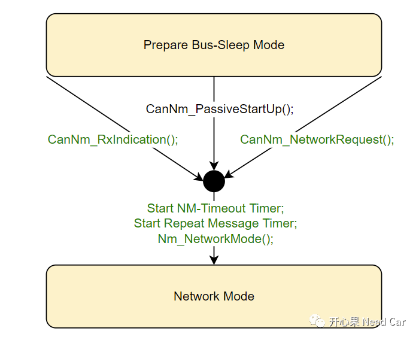
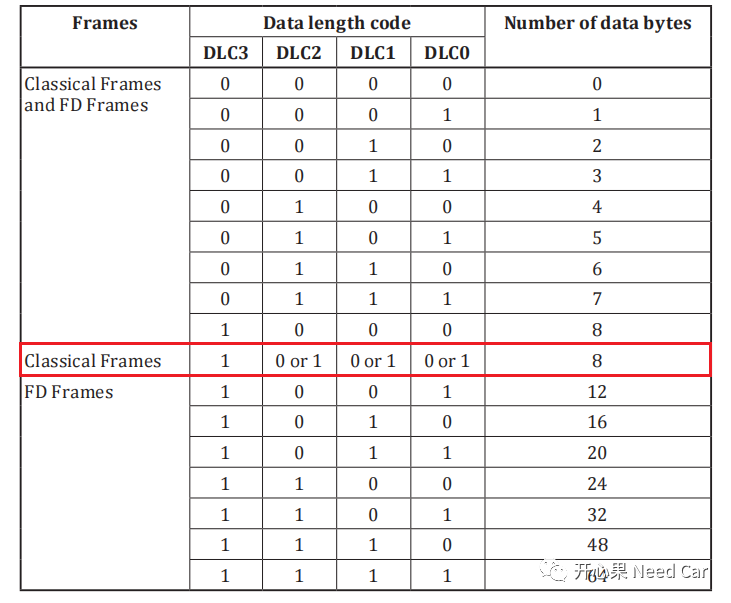
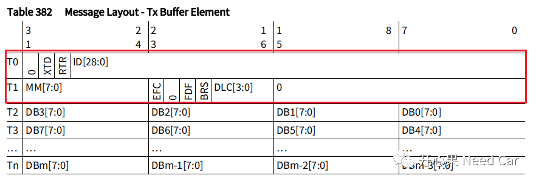
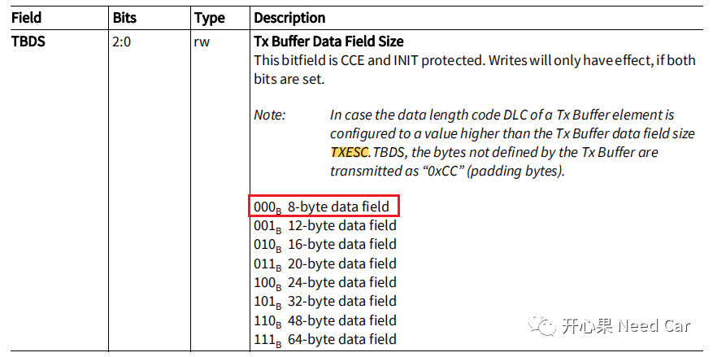
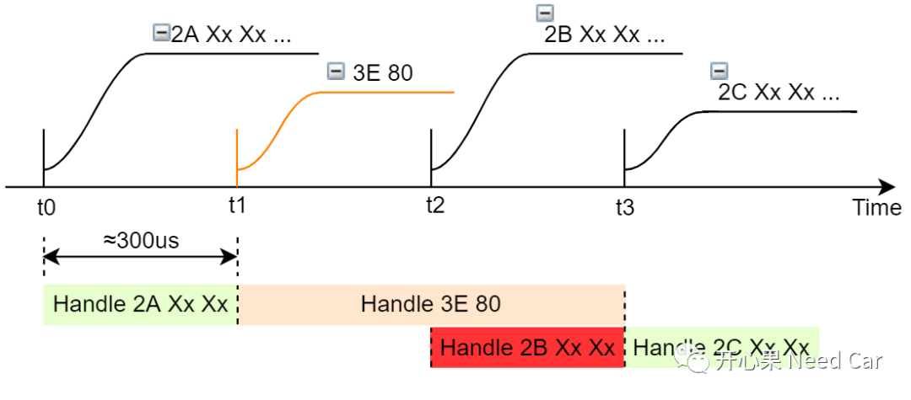

Q1、Prepare Bus-Sleep Mode进入Network Mode条件

由CanNm_RxIndication()方式进入，即：在PBSM（Prepare Bus-Sleep Mode）下收到网络管理报文方式进入； 由CanNm_PassiveStartUp()方式进入。调用CanNm_PassiveStartUp()接口，表明网络需要被动唤醒，收到网络管理报文也属于被动接收，和CanNm_RxIndication()方式进入不一样吗？这里说一下个人理解：在PBSM模式下，ECU依然有接收报文的能力，如果接收到NM Msg，可以通过CanNm_RxIndication()接收，唤醒网络；如果收到特定的应用报文（比如：包含KL15信号的应用报文）或者诊断报文，也想把网络唤醒，显然非网络管理报文不会通过CanNm_RxIndication()接口接收，如果想让非网络管理唤醒网络，此时就可以让上层主动调用CanNm_PassiveStartUp()接口，进而唤醒网络； 由CanNm_NetworkRequest()方式进入，同CanNm_PassiveStartUp()方式，此方式也属于上层请求行为。不同于CanNm_PassiveStartUp()方式，此方式表明当前节点需要通信，需要主动唤醒网络。比如前面提到的一种情况：VFC置位时，即可主动调用CanNm_NetworkRequest()接口进入RMS状态。
Q2：CAN DLC与实际发送数据长度关系
对于Classical Frame，DLC的长度有效范围为0~8，对应的发送数据长度为0~8 bytes，如果DLC长度≥8，则发送数据长度为8 byte。 对于FD frame，DLC不仅可以等于0~8，还可以等于9~F，对应的数据长度分为12、16、20、24、32、48、64。如下所示：

对于Classical Frame，如果设置DLC = 4，实际在总线上传输的数据长度是4 byte还是8 byte?答：4 byte。虽然可以这样设置，但是工程实际中，很少这样用，一帧报文只传输4个数据或者更少，会降低有效数据负载，效率低。
注意：假设传输一个Classical Frame，虽然总线只传输4 byte数据，但是CAN模块消耗的硬件资源（RAM），实际是8 byte（eg：tc3xx）。
发送一帧CAN报文，对应一个Tx Buffer Element，在Tx Buffer Element中，根据发送CAN报文的类型决定消耗的DB（Data Buffer）大小，如下所示：

一帧CAN报文消耗多大的DB呢？DB空间的消耗，由TXESC.TBDS决定，因此，DB最小需要8 byte。如下所示：

什么意思呢？就是在硬件配置阶段，即使配置DLC = 4，但是一帧CAN报文也必须消耗8 byte的硬件RAM资源。而数据发送到总线时，只发送4 byte的数据。
Q3：$3E 80发送时机

如上，讨论一种工况：

参考资料
SIMPLE TITLE